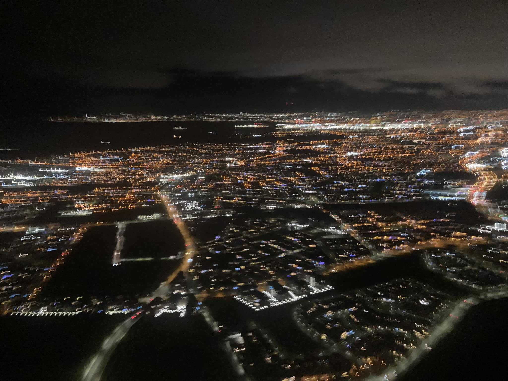
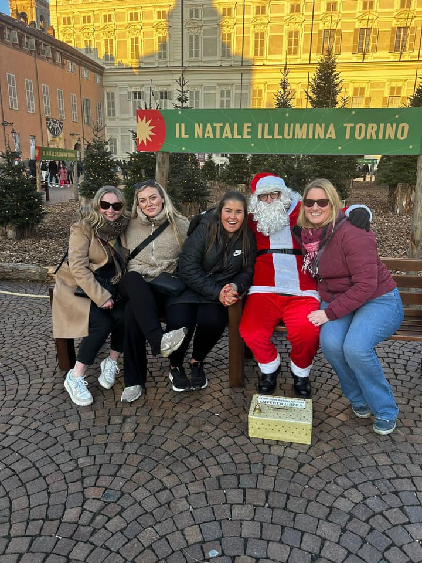
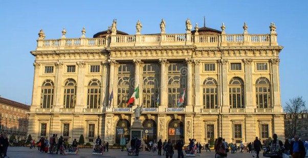
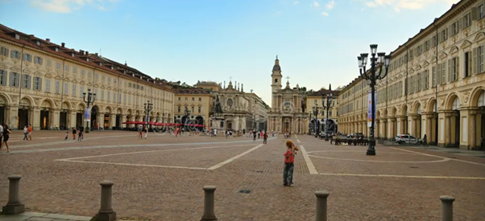
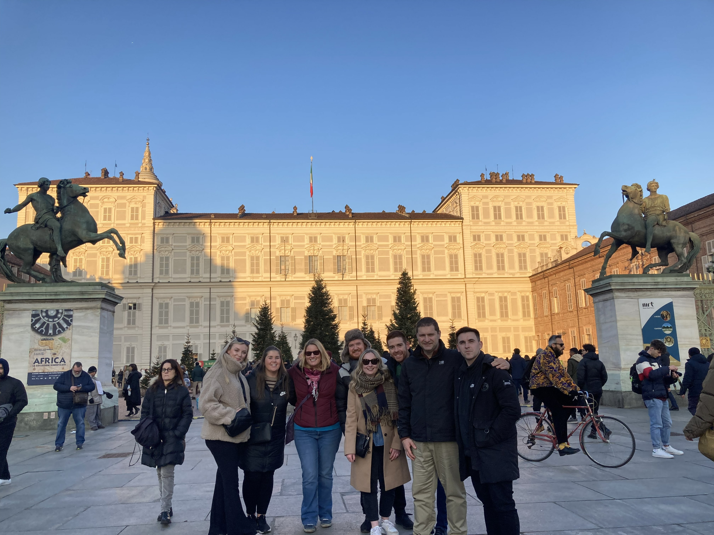
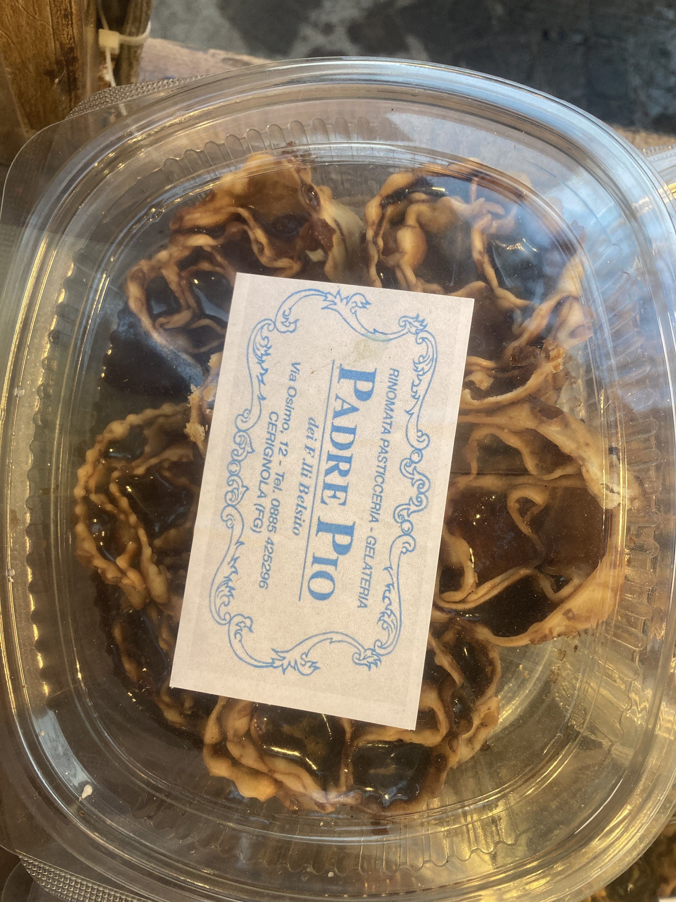
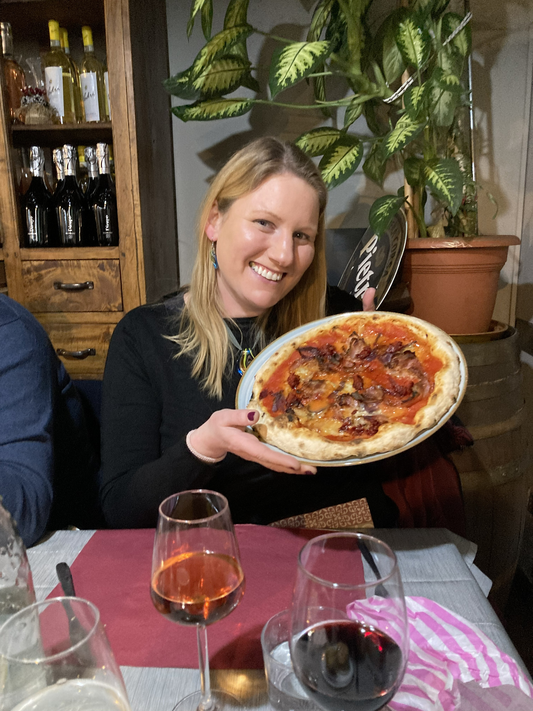
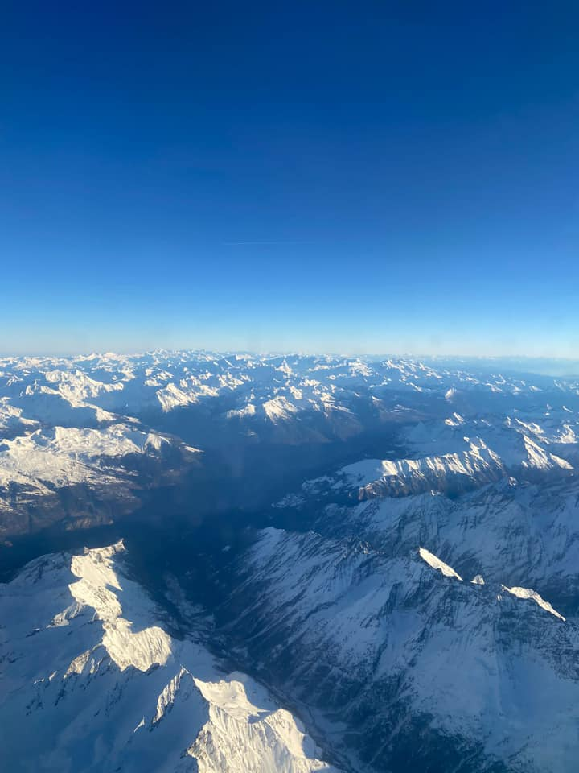

We headed to Turin in December 2023 for the Christmas markets — and while the markets themselves were not the main event, the city absolutely was. Grand baroque piazzas, elegant arcaded streets, incredible food, the best gluten-free pizza we have found anywhere, Irish coffees to warm up and a brilliant day of wandering and shopping. Turin is seriously underrated and we would go back in a heartbeat.
What this trip gave us:
The honest story
We flew into Turin on a Friday evening in December 2023, full of anticipation for what we had heard were wonderful Christmas markets. The honest verdict? The markets were pleasant but not the headline act. If you are specifically chasing the Christmas market experience, Poland or Germany will serve you better.
But here is the thing — Turin itself is absolutely magnificent, and we spent a very happy Saturday just wandering around it. The grand baroque piazzas, the elegant arcaded streets that keep you sheltered from the winter chill, the Palazzo Madama rising majestically over Piazza Castello — it is a genuinely beautiful city that does not get nearly enough credit.
The food was the real highlight. We found outstanding gluten-free pizza — the kind that makes you wonder why you ever settled for less — and the coffee culture in Turin is something special. Turin is actually credited as the birthplace of the Italian espresso tradition, and it shows. We warmed up with Irish coffees that hit exactly the right spot on a cold December afternoon.
We did some shopping, soaked up the atmosphere and flew home on Sunday afternoon — passing over the Alps, which from the plane window looked absolutely spectacular. Turin might not have been the Christmas market trip we planned, but it turned out to be a brilliant city break we would happily repeat.
The heart of Turin — a vast, grand square lined with baroque palaces. Palazzo Madama sits at its centre and is one of the most impressive buildings in all of northern Italy.
One of the best gluten-free pizzas we have ever had — anywhere. Turin's food scene is excellent and GF options are plentiful. An absolute must for any coeliac visitor.
The perfect winter warmer on a cold December afternoon. Turin's coffee culture is world class — the city is credited as the home of Italian espresso — and the bars do not disappoint.
The city looks extraordinary after dark — the piazzas and palaces lit up, the arcaded streets glowing warmly. Walking Turin at night in December is a genuinely special experience.
Turin has brilliant shopping — from the elegant Via Roma to the covered Galleria San Federico and plenty of independent shops tucked under the famous arcades.
Flying home over the Alps in December is something else entirely — snow-capped peaks stretching as far as you can see. Worth a window seat on the way home.
From the grand squares and baroque palaces to the food, the people and the spectacular view flying home over the mountains.








Watch our reel
Turin has a brilliant food and drink scene — from the coffee bars and aperitivo culture to the restaurants and the outstanding pizza. Watch our reel for our picks on where to eat and drink in the city.
Where to eat and drink in Turin 🍕☕
Want to see more of Italy beyond Turin? TourRadar has a brilliant range of Italy tours taking in the very best the country has to offer.
Italy is one of the world's great travel destinations — and Turin is just the beginning. From the canals of Venice and the art of Florence to the Amalfi Coast and the ruins of Rome, a guided Italy tour is a brilliant way to take it all in without spending your holiday coordinating every leg yourself.
Disclosure: This is an affiliate link. If you book through it we may earn a small commission at no extra cost to you.
From walking tours of the Old Town and visits to the Egyptian Museum to food tours and day trips — browse Turin activities here:
Disclosure: If you book through these links we may earn a small commission at no extra cost to you.
Common questions
What to pack for Turin in winter
Turin in December is cold — typically 2°C to 8°C — but milder than Poland. The elegant arcaded streets do give you some shelter from the elements, but you still need to wrap up properly for full days out. These are the things we would not leave home without.
A good thermal base layer makes all the difference on cold December days — especially when you are out exploring the piazzas and markets for hours at a time.
View on Amazon →Turin's cobbled streets are hard on your feet and cold underfoot in December. Warm, comfortable boots are essential for a full day of exploring the city.
View on Amazon →Even in milder Italian winter temperatures your hands and head will feel the cold. A good pair of gloves and a warm hat will make your days out much more comfortable.
View on Amazon →Handy for carrying extra layers, your shopping and a water bottle. Light enough to take everywhere without getting in the way on a full day of exploring.
View on Amazon →Cold weather drains phone batteries faster than you expect. Keep a power bank in an inside pocket so it stays warm and keeps you connected all day.
View on Amazon →Handy for maps, restaurant bookings and staying connected without paying roaming charges — especially useful for navigating a new city on foot.
View on Amazon →Italy uses Type C and F plugs — different to Ireland. Don't arrive on a cold Friday evening with nothing charged after your flight.
View on Amazon →Always worth having — for blisters, headaches and anything else that comes up when you are away from home and spending long days on your feet.
View on Amazon →Disclosure: These are Amazon affiliate links. If you buy through them we may earn a small commission at no extra cost to you. These are all things we'd genuinely pack for a winter trip to Turin.
Turin is one of Italy's most elegant and underrated cities — grand, beautiful and surprisingly easy to explore. Go for the food, stay for the piazzas and come home already planning the next trip.
Affiliate disclosure: if you book through our links we may earn a small commission at no cost to you. We only recommend trips and experiences we'd be happy to stand over.